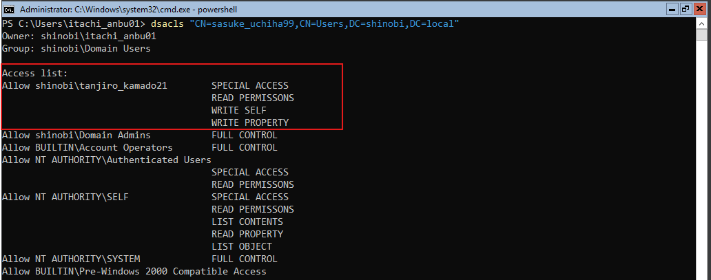

DACL Abuse (GenericWrite on User)
Hypothesis: After compromising tanjiro_kamado21 (Password: Hinokami@456), we continued our analysis of outbound control rights. We hypothesized that Tanjiro might have control over specific user objects, not just groups.
Findings: A BloodHound query for "Outbound Object Control" revealed that tanjiro_kamado21 has GenericWrite privileges over the user sasuke_uchiha99.
Impact: GenericWrite on a user object grants the ability to modify specific attributes of that user. Unlike GenericAll (which allows full control, including password resets), GenericWrite allows us to modify the servicePrincipalName (SPN) attribute. This vulnerability enables a Targeted Kerberoasting attack: we can write a fake SPN to the target user, request a Kerberos TGS ticket for that SPN, and then crack the ticket offline to recover sasuke_uchiha99's cleartext password.
Objective: To simulate this specific delegation flaw, we manually modified the ACL of the target user sasuke_uchiha99.
Configuration: Using dsacls, we granted tanjiro_kamado21 specific write permissions (Write Self, Write Property) on the Sasuke object.
dsacls "CN=sasuke_uchiha99,CN=Users,DC=shinobi,DC=local" /G shinobi\tanjiro_kamado21:GW
dsacls output confirms that Tanjiro has SPECIAL ACCESS, including WRITE PROPERTY permissions on the target.
Objective: Abuse the GenericWrite permission to perform a "Targeted Kerberoasting" attack. Since sasuke_uchiha99 is a normal user (not a service account), they do not have an SPN by default. We will inject one to make them roastable.
targetedKerberoast.py (part of the shutdownrepo/targetedKerberoast suite or Impacket variations).python3 targetedKerberoast.py --dc-ip 192.168.56.10 -v -d 'shinobi.local' -u 'tanjiro_kamado21' -p 'Hinokami@456'
1. Auth: Authenticates as tanjiro_kamado21.
2. Abuse: Writes a temporary SPN to sasuke_uchiha99 (e.g., kadmin/changepw or a random string).
3. Request: Immediately requests a TGS ticket for that SPN.
4. Cleanup: Removes the SPN to hide tracks (optional, but often automated by the tool).
5. Result: The tool successfully extracted the Kerberos 5 TGS-REP hash for sasuke_uchiha99.
Objective: Recover the cleartext password of the target user from the extracted hash. Tool: John the Ripper Command: bash john -w=anime_wordlist.txt sasuke_uchiha99_hash.txt
Findings:
◇ Hash Type: krb5tgs (Kerberos 5 TGS).
◇ Password Found: Sharingan#321.
◇ Conclusion: We have successfully escalated privileges from tanjiro_kamado21 to sasuke_uchiha99 by abusing a Write Property ACL.
{kind=link}
{kind=link}
{kind=link}
{kind=link}